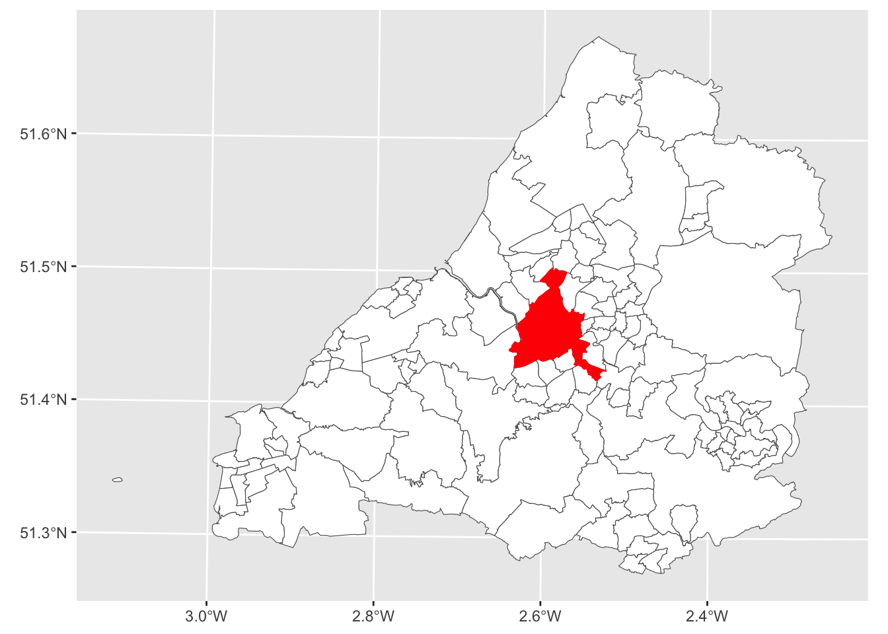
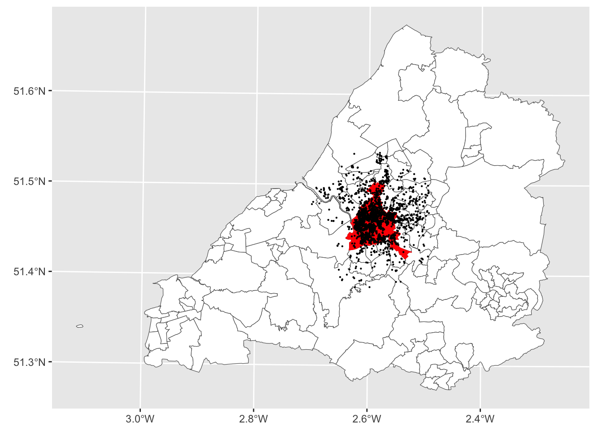
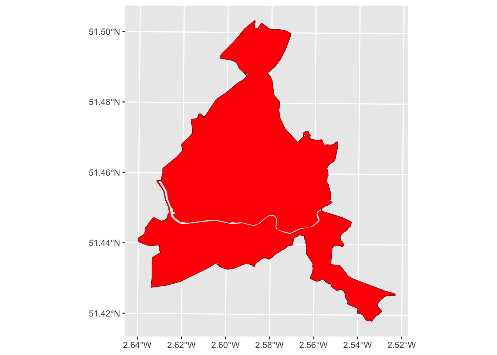
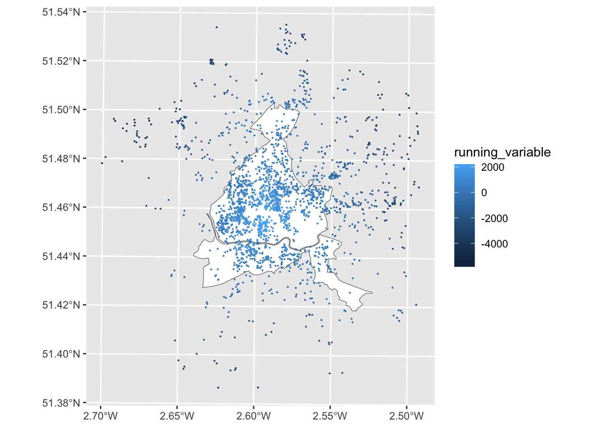
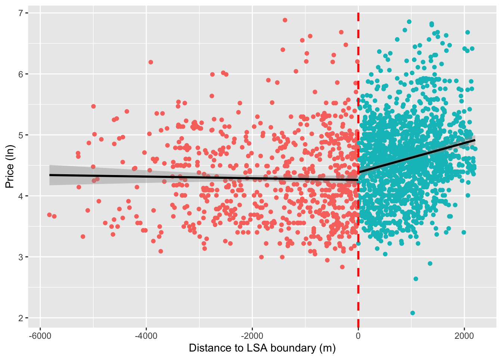
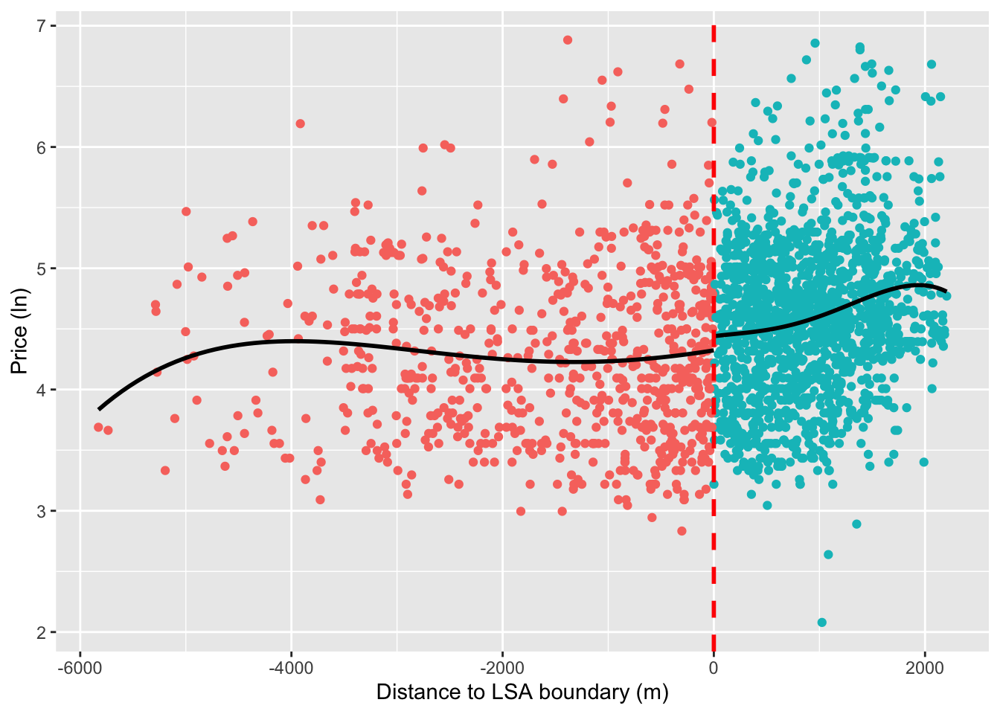
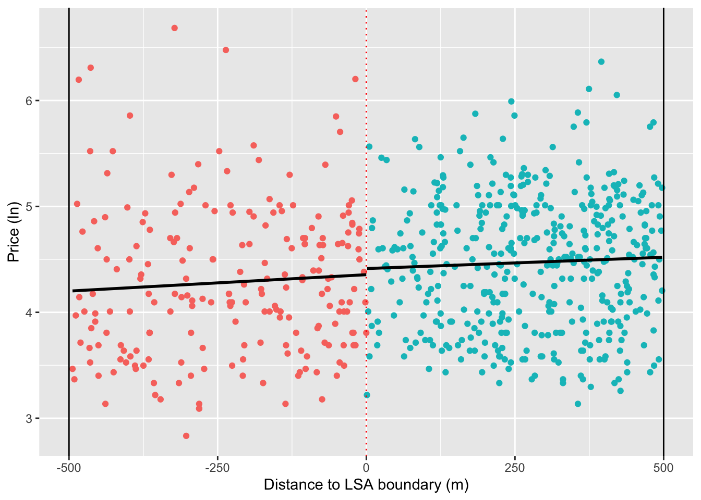

library(dplyr)
library(tidyr)
library(sf) # for spatial operations
library(rdrobust) # for tools and graphical output for regression discontinuity designs
library(units) # for dealing with units
library(rprojroot)
library(ggplot2)
library(stringr) # for string cleaning
library(sfheaders) # for converting object to linestring
library(concaveman) # for convex hull
knitr::opts_chunk$set(include=TRUE, message=FALSE, warning=FALSE, tidy.opts=list(width.cutoff=60),tidy=TRUE)Causal design and urban policy evaluation: Potential outcomes & Geo RDD practical
The purpose of this practical is twofold: first it aims to provide a concrete example of the potential outcomes framework to support the lecture and second to provide an interactive walk through of implementing a regression discontinuity design where a geographic boundary is leveraged as the discontinuity.
All the data required for this practical has been uploaded to the learning materials section of blackboard.
1) Potential Outcomes in action
Remember that the Potential Outcomes framework allows us to express causality as a comparison between two alternate versions of the world: one in which a unit, \(i\), receives a policy intervention (the treatment), \(Y_i^1\), and the counterfactual state in which it doesn’t, \(Y_i^0\). We call these realized and counterfactual states ‘potential outcomes’. This allows us to estimate causal effects, \(\delta_i\), as the difference between the world we observe and the world we don’t: \(\delta_i = Y_i^1 - Y_i^0\).
For concreteness, suppose we wanted to understand the effect of gender on budgetary decisions across cities.1 Specifically, we want to understand how a city having a woman as a mayor effects the proportion of the budget allocated to health programs including the provision of clean drinking water or maternal care. There is huge interest in questions like this within both political science and development economics. To do this, we collect data across seven cities recording whether the mayor was a man or a women (our treatment) and the share of the city’s budget allocated to health programs (the outcome). We observe the treatment status, gender of mayor, and outcome, budget allocation, for each city. Furthermore, suppose that, for the time being, men and women mayors have been assigned to cities at random. Also suppose that we are also able to observe the counterfactual scenario as well. In other words, we can see how a man would have allocated the budget of a city headed by a woman, and vice versa.
Our data might look something like this:
complete_information = data.frame (city_i = c("city_1", "city_2", "city_3", "city_4",
"city_5", "city_6", "city_7"),
Y_0_man = c(10, 15, 20, 20, 10, 15, 15),
Y_1_woman = c(15, 15, 30, 15, 20, 15, 30))
complete_information city_i Y_0_man Y_1_woman
1 city_1 10 15
2 city_2 15 15
3 city_3 20 30
4 city_4 20 15
5 city_5 10 20
6 city_6 15 15
7 city_7 15 30In this example we can estimate individual treatment effects (the effect that being treated with some policy intervention has on specific units) because the data is complete (we’ve observed both potential outcomes). Remember, the Simple Difference in Outcomes (SDO) will return the effect of being treated for any individual unit: \(\delta_i = Y_i^1 - Y_i^0\).
Exercise - calculate the individual treatment effects using the SDO:
#Example code
complete_information = complete_information %>%
dplyr::mutate(treatment_effect_i = Y_1_woman - Y_0_man)
complete_information city_i Y_0_man Y_1_woman treatment_effect_i
1 city_1 10 15 5
2 city_2 15 15 0
3 city_3 20 30 10
4 city_4 20 15 -5
5 city_5 10 20 10
6 city_6 15 15 0
7 city_7 15 30 15We see that most places would received more healthcare spending under a women mayor whereas one, city 4, would have actually seen less healthcare spending.
We can also estimate an Average Treatment Effect (ATE) across the two groups by comparing the difference in group means. Exercise, calculate the difference in means.
#Example code
mean(complete_information$Y_1_woman) - mean(complete_information$Y_0_man)[1] 5However, we can see that this presents us with a problem because we can only observe one of these potential outcomes in real life. We call this the fundamental problem in causal inference. This fact is formalized by the switching equation, which literally ‘switches’ our potential outcomes between the realized and counterfactual worlds depending on whether or not we observe the treatment being assigned:
\[ Y_i = D_iY_i^1 + (1-D_i)Y_i^0 \]
Where:
\[Y_i \begin{cases} Y_i^1 \text{ if } D_i = 1, \\ Y_i^0 \text{ if } D_i = 0 \end{cases} \]
So, in reality me might have a scenario something more like this:
missing_information = data.frame(city_i = c("city_1", "city_2", "city_3", "city_4",
"city_5", "city_6", "city_7"),
Y_0_man = c(NA, 15, 20, 20, 10, 15, NA),
Y_1_woman = c(15, NA, NA, NA, NA, NA, 30))
missing_information city_i Y_0_man Y_1_woman
1 city_1 NA 15
2 city_2 15 NA
3 city_3 20 NA
4 city_4 20 NA
5 city_5 10 NA
6 city_6 15 NA
7 city_7 NA 30Can we calculate individual treatment effects?
#Example code
missing_information = missing_information %>%
dplyr::mutate(treatment_effect_i = Y_1_woman - Y_0_man)
missing_information city_i Y_0_man Y_1_woman treatment_effect_i
1 city_1 NA 15 NA
2 city_2 15 NA NA
3 city_3 20 NA NA
4 city_4 20 NA NA
5 city_5 10 NA NA
6 city_6 15 NA NA
7 city_7 NA 30 NANo, we can’t.
But we have a distribution of both \(y_i^1\) and \(y_i^0\) in the population. So, we can estimate ‘average treatment effects’ (ATE) across the population by comparing outcomes for units in the ‘treatment’ (those with \(y_i^1\)) and ‘control’ (those with \(y_i^0\)) groups. We have also seen how the simple difference in means between the treated and control groups returns the ATE under random assignment into treatment (which I’ve said we have here). This is because the potential outcomes across these groups are the same. In other words, random assignment ensures that \(E[Y0|T=1] = E[Y0|T=0]\) and selection bias has been reduced to zero.2
Calculate the average treatment effect (ATE) from missing infomation.
mean(missing_information$Y_1_woman, na.rm = T) - # na.rm = T ignores the NAs
mean(missing_information$Y_0_man, na.rm = T) # na.rm = T ignores the NAs[1] 6.5Note - we’ve had to remove the NA values in each vector.
Also note, that we’ve calculated a different ATE, 6.5, compared to the example with complete information, 5. This is because, even under random assignment we have heterogeneity across individual treatment effects. We can’t recover these (at least not in this context) so we do get some bias from heterogeneous individual treatment effects.3
2) Geographic boundaries as regression discontinuities - Landlord licensing in Bristol
About nine years ago Bristol city council introduced a policy requiring that landlords of rented Homes of Multiple Occupancy (HMOs) in certain inner-city areas to obtain licenses from the council.4 The scheme aimed to protect and improve the conditions of rented housing in the city and gives council housing officers increased powers to inspect and sanction rogue landlords. Over time the scheme has been rolled out across more and more city wards.
We can map this data to observe the distribution of these wards throughout the city. We’ll call them Special Licencing Areas (SLAs). You can directly download the Bristol ward spatial data as a .gpkg file from the below URL we use in the read_sf(). To read more about the geopackage type format, use this [link]](https://www.geopackage.org/).
bristol_wards = read_sf("https://www.dropbox.com/s/3pujrbqtde5tpwr/wards_with_sla_date.gpkg?dl=1")
sla_wards = bristol_wards %>%
#drop the wards without an SLA implementation data (i.e., no SLA)
tidyr::drop_na(sla_date) %>%
sf::st_as_sf()
ggplot(bristol_wards) +
geom_sf(fill = "white", size = .05) +
geom_sf(sla_wards, fill = "red", color = "red", size = 0.5, mapping = aes()) +
theme(legend.position = "none")
The landlords of properties within the SLA wards must have a licence to operate. Those outside don’t. Licences cost money to obtain and require that landlords invest in their properties to ensure they meet the minimum standards required of the scheme. We might, therefore, expect that this policy will have a knock on effect on the rental prices of properties within SLA wards. Specifically, we’d expect landlord to raise prices to cover the cost of the license fee and the additional investment required to keep their properties up to code.
How has the SLA impacted the prices of rented property prices?
This question seems well suited to a Regression Discontinuity Design with Geographic Boundaries (aka GeoRDD). We have a treatment that is assigned at a discrete cutoff. Remember RDD assumes that treated and untreated units immediately to either side of the cutoff are so similar in terms of their potential outcomes that we can deal with the treatment as if it were assigned at random. The closer we get to this boundary, the more similar units are.
To answer this question we will also need to data on property listings. Ideally we’d use data from medium-long term rental listings in the city. However, this data is sensitive and tricky to come by. Instead, we’ll use data on AirBnB listings from Bristol which, as rented accommodation in the city, are also subject to the SLA policy. We get this data from InsideAirBNB. The data contains the location and prices of AirBnB listings over the last twelve months alongside several ancillary attributes.
This code reads the data in and plots it. Again, you can directly download the .csv file with the data we prepared for you using the below URL in the read.csv()
listings = read.csv("https://www.dropbox.com/s/uaf9rj6wf95iy5m/airbnb_listings.csv?dl=1") %>%
sf::st_as_sf(., coords = c("longitude", "latitude"), crs = 4326) %>%
sf::st_transform(st_crs(bristol_wards)) %>%
#convert price to integer and remove £ sign
dplyr::mutate(price = as.integer(stringr::str_remove(price, "[$]")))
ggplot(bristol_wards) +
geom_sf(fill = "white", size = .05) +
geom_sf(sla_wards, fill = "red", color = "red", size = 0.5, mapping = aes()) +
geom_sf(data = listings, size = .1, fill = "darkred") +
theme(legend.position = "none")
We can see from the map that we’ve got lots of listings in and around the SLA wards which means there should be plenty of data around the threshold that we can use for our Geo-RDD.
The outcome variable will be the price of each listing within and outside of the SLA areas, our hypothesis being that, because landlords in SLA wards are subject to tighter controls and regulations and more checks, they must invest more intro their properties and will raise prices to compensate. We expect this to be observable in the average prices of properties.
The price variable is skewed so we need to log transform it, there are also some zeros, which seems implausible, so we’ll need to address that by removing them.
ggplot(listings, aes(x=price)) + geom_histogram()listings = listings %>%
dplyr::filter(price > 0) %>%
dplyr::mutate(log_price = log(price))
ggplot(listings, aes(x=log_price)) + geom_histogram()There, that looks better.
With the dependent variable sorted, we’re going to do the following: 1) Assign a treatment status to each property based upon its (non)membership of the SLA wards 2) Select bandwidth that allows us to compare properties immediately to either side of the SLA boundary
Assigning the treatment
We’re interested in whether a listing falls within or outside of a special licensing area (SLA). We basically need to do two things here. First, we need to assign a cutoff or threshold at which a listing will be assigned to either the treatment or control group. We’ll do this by linking each listing to the SLA boundaries via a spatial join which used their geometric attributes to create the links. Second, we need to create our running variable. We’ll do this by calculating the minimum distance of each listing to the exterior boundary of the special licences areas. But we want to draw a distinction between listings that fall within SLAs and those that don’t. To do this we’ll assign all distances within an SLA as negative and those outside as positive. Meaning our cutoff is zero.
The code below spatially joins SLA ward membership to the individual listings and creates a “treatment_status” variable that takes the value of 1 if the listing is within an SLA ward, otherwise zero.
listings = listings %>%
#note we just want the name variable from the wards
sf::st_join(., sla_wards %>% dplyr::select(WD21NM, geom), st_within, left = T, largest = T) %>%
replace(is.na(.), 0) %>%
#assign so zero = ctonrol and 1 = treated
dplyr::mutate(treatment_status = as.factor(ifelse(WD21NM == 0, 0, 1)))
table(listings$treatment_status)
0 1
758 1557 We can see that we’ve got more listings in the treatment group than control. That tells us something about the geography of the SLA policy and the phenomenon it’s designed to address. This imbalance is fine however, as we’re going to be losing a lot of these listing when we define our bandwidth.
Question: is this an example of a ‘sharp’ or ‘fuzzy’ regression discontinuity?
Great, now that we’ve got our treatment status we need to create our our running variable. Remember, this is the variable along which the threshold sits and we’ll apply our bandwidth to. Usually in an RDD this would already be in our data, but here, because of the geographical nature of the problem we’ll have to create it ourselves. We’ll do this by calculating the distance of each listing from the threshold (i.e., the external boundary of the SLA neighborhoods).
First, we need to create a single object for the external boundary of all the LSA wards from which the running variable can be calculated.
#st_union 'dissolves' internal boundaries creating a single polygon
sla_wards_boundary = sf::st_union(sla_wards)
ggplot(sla_wards_boundary) +
geom_sf(fill = "white", size = .05)However, as you can see, we’ve got a problem here. The river is counted as an external boundary meaning that we now have a boundary running through the middle of our LSA wards. This is going to be a problem. Take a moment to think why before moving onto the next bit. Remember, that we’re trying to use the external boundary of the combined LSA areas as the discontinuity.
Ok, so, the problem is that, when we calculate the distance of properties to the external boundary, those that are close to the river are going to be given false distances, as the algorithm will ‘snap onto’ the river rather than the external boundary. These properties won’t make for valid points of comparison to those immediately outside of the LSA wards because they’re not actually geographically close. Thus we can’t assume that, as the distance tends to zero, their potential outcomes will be the same in expectation. We are going to need to address this somehow by removing the river.
We’ll do this by creating a concave hull around our SLA wards which will cut out the river. Don’t worry too much about how I’m going to do this - just run the code - I’ve left it in for the interested student and it’s a good warm-up for the more GIS focused things you’ll be doing next term. It’s also a good example of the types of challeneges that get thrown up when we try to implement these research designs in practice.
#The concave hull algorithm requires spatial points
#convert polygon boundary to points for the convex hull
boundary_points = sla_wards_boundary %>%
# convert to multilinestring
sf::st_cast("MULTILINESTRING") %>%
# convert to line string
sf::st_cast("LINESTRING") %>%
# sample points from along this line at regular intervals
sf::st_line_sample(., n = 500)
#create concave hull
hull = concaveman::concaveman(st_coordinates(boundary_points)[,1:2])
#conveert back to linestring
sla_linestring = sfheaders::sf_linestring(hull, x = "V1", y = "V2") %>%
sf::st_set_crs(., st_crs(listings))Let’s see how that looks.
ggplot(sla_linestring) +
geom_sf(fill = "white", size = 2) +
geom_sf(sla_wards, fill = "red", color = "red", size = 0.5, mapping = aes()) +
theme(legend.position = "none")
Great. Now we need to calculate the distance of each listing from this boundary.
listings = listings %>%
#use linestring to get non-zero values
dplyr::mutate(distance_to_boundary = sf::st_distance(listings, sla_linestring)) %>%
#drop units (m)
units::drop_units() %>%
#multiply untreated by -1 to give negative sign
dplyr::mutate(running_variable = ifelse(treatment_status == 0, distance_to_boundary*-1, distance_to_boundary))Let’s check that this has done what we wanted it to.
ggplot(sla_wards_boundary) +
geom_sf(fill = "white", size = .05) +
geom_sf(data = listings, aes(color = running_variable), size = .1) 
Looks good, we’ve successfully created a running variable. Now lets create a regression discontinuity plot. This graphically displays the distribution of property prices around the discontinuity.
ggplot(data=listings, aes(x=running_variable, y=log_price)) +
geom_point() +
geom_vline(xintercept = 0, linetype="dotted",
color = "red") +
labs(y = "Price (ln)",
x = "Distance to LSA boundary (m)")Do we see the possibility of higher prices within the SLA wards? It looks like prices might be a little higher closer to the line.
We can start exploring this by fitting regression lines either side of the threshold to graphically show any discontinuity in prices along the running variable.
ggplot(listings, aes(x = running_variable, y = log_price, color = treatment_status)) +
geom_point() +
geom_smooth(aes(group=treatment_status), method = "lm", color = "black") +
guides(color = F) +
geom_vline(xintercept = 0, color = "red",
size = 1, linetype = "dashed") +
labs(y = "Price (ln)",
x = "Distance to LSA boundary (m)")
It looks like we might have a discontinuity in prices at the cutoff. We can also use a polynomial to fit a curved line through these points. Sometimes RDDs are estimate using these kinds of regressions, but we’ll stick with the linear case in this example.
ggplot(listings, aes(x = running_variable, y = log_price, color = treatment_status)) +
geom_point() +
geom_smooth(aes(group=treatment_status), method = "lm", formula = y ~ poly(x, 4),
se = FALSE, color = "black") +
guides(color = F) +
geom_vline(xintercept = 0, color = "red",
size = 1, linetype = "dashed") +
labs(y = "Price (ln)",
x = "Distance to LSA boundary (m)")
So, we’ve seen what looks like a discontinuity in property prices at the threshold which could suggest that the SLA policy has a causal effect on house prices. Do we see a difference in the raw comparison of means?
treated_prices = listings %>%
dplyr::filter(treatment_status == 1)
control_prices = listings %>%
dplyr::filter(treatment_status == 0)
mean(treated_prices$price) - mean(control_prices$price)[1] 30.87929Seems so. We can see that being treated, in an SLA ward appears to be associated with a ~$31 boost in price.
However, remember that we’re not comparing equivalent properties either side of the cutoff (i.e., potential outcomes for properties in the treatment and control groups are unlikely to be the same in expectation). We’re currently looking at properties along the full range of the running variable, not those directly to either side of the cutoff which we expect to have very similar potential outcomes. Some of you will have observed that the LSA wards form the city center of Bristol and include some of the city’s most desirable and busy neighborhoods. It is plausible that properties in the SLA wards are likely to be the most desirable to those renting short-term accommodation. This would mean that the price boost we’ve captured would not by caused by the policy but another variable, unobserved variable.
So let’s look locally (i.e., either side of the SLA boundary) to do this we’ll need to start playing with bandwidths. Given that the whole raison d’etre of design- as opposed to model-based inference is to reduce researcher degrees of freedom, the selection of bandwidths is not a straight forward choice. Indeed, it requires researchers to make informed but often arbitrary decisions about how the bandwidth will be defined. Let’s explore this.
Assign a bandwidth
Remember, in RDD we’re assuming that units that are just to either side of the cutoff, like really close, are similar enough for us to consider their assignment into treatment as being random. In other words, we’re saying that things close to the cutoff are more similar than things far away and the farther away we get, the less similar things will be. The bandwidth is how much area around the cutoff we consider things to be comparable. This is the same for regular RDD, but our cutoff is a geographical boundary.
We could assign an arbitrary bandwidth at, say 500m, from the the cutoff. Let’s see what this looks like.
ggplot(data=listings, aes(x=running_variable, y=log_price)) +
geom_point() +
#add points we're looking at for the RDD in orange
geom_point(data = listings %>% dplyr::filter(between(running_variable, -500, 500)),
aes(x=running_variable, y=log_price, colour = "orange")) +
theme(legend.position = "none") +
geom_vline(xintercept = 0, linetype="dotted", color = "red") +
geom_vline(xintercept = c(500, -500), linetype="solid", color = "black") +
labs(y = "Price (ln)",
x = "Distance to LSA boundary (m)")banded_listings = listings %>% dplyr::filter(between(running_variable, -500, 500))
table(banded_listings$treatment_status)
0 1
214 440 In terms of our regression discontinuity, this is what we are now looking at.
ggplot(listings %>% dplyr::filter(between(running_variable, -500, 500)),
aes(x = running_variable, y = log_price,
color = treatment_status)) +
geom_point() +
geom_smooth(aes(group=treatment_status), method = "lm", se = FALSE, color = "black") +
guides(color = F) +
theme(legend.position = "none") +
geom_vline(xintercept = 0, linetype="dotted", color = "red") +
geom_vline(xintercept = c(500, -500), linetype="solid", color = "black") +
labs(y = "Price (ln)",
x = "Distance to LSA boundary (m)")
This starts to cast doubt around the presence of a discontinuity since, when we look within the bandwidth, the regression slop to the left of the cutoff is now positive. In other words, the properties that are not very close to the boundary were doing a lot of the heavy lifting in our previous graphs.
We could go further here and it’s common to test multiple bandwidths and kernal functions that assign greater weight to observations closest to the cutoff. This is because we expect differences in potential outcomes to be smallest at the cutoff (i.e. two properties < 1m from the cutoff should have identical potential outcomes in expectation). However, this can get pretty complicated pretty quickly and we’re more interested in the intuition of GeoRDD here, so we’re going to set this issue aside for now.
Excellent, we’ve gotten to the point where we can estimate a proper GeoRDD. Earlier we saw how the causal effect in an RDD could be estimated from the difference in coefficients between two regression representing the left and right hand side of the cutoff. We can also do this within a single equation:
\[ Y = \beta_0 + \beta_1(Running - Cutoff) + \beta_2 Treated + \beta_3(Running - Cutoff) \times Treated + \epsilon \]
Note that we’ve centered the running variable around the cutoff by using \((Running - Cutoff)\) which takes a negative value to the left of the cutoff and a positive value to the right.
Now let’s estimate this in r. We don’t need to worry about centering our running variable around the cutoff as this has been done by design, so the actual estimation is fairly straightforward.
#simply expressed in r
lm(log_price ~ treatment_status + running_variable + treatment_status:running_variable,
data = listings %>% dplyr::filter(between(running_variable, -500, 500))) %>%
summary()
Call:
lm(formula = log_price ~ treatment_status + running_variable +
treatment_status:running_variable, data = listings %>% dplyr::filter(between(running_variable,
-500, 500)))
Residuals:
Min 1Q Median 3Q Max
-1.42819 -0.52665 -0.01144 0.46860 2.42930
Coefficients:
Estimate Std. Error t value Pr(>|t|)
(Intercept) 4.355e+00 8.108e-02 53.716 <2e-16 ***
treatment_status1 5.777e-02 1.082e-01 0.534 0.594
running_variable 3.099e-04 2.982e-04 1.039 0.299
treatment_status1:running_variable -9.677e-05 3.783e-04 -0.256 0.798
---
Signif. codes: 0 '***' 0.001 '**' 0.01 '*' 0.05 '.' 0.1 ' ' 1
Residual standard error: 0.6476 on 650 degrees of freedom
Multiple R-squared: 0.02108, Adjusted R-squared: 0.01656
F-statistic: 4.666 on 3 and 650 DF, p-value: 0.003102What can we infer from this regression about the causal effect of the SLA policy on AirBnB prices?
One issue that might be confounding inference is the fact that properties inside SLA wards, being located towards the center of the city, tend to be smaller than those more suburban properties outside of the SLA. Let’s account for this by controlling for the number of rooms in a property.5
#simply expressed in r
lm(log_price ~ treatment_status + running_variable + treatment_status:running_variable + bedrooms,
data = listings %>% dplyr::filter(between(running_variable, -500, 500))) %>%
summary()
Call:
lm(formula = log_price ~ treatment_status + running_variable +
treatment_status:running_variable + bedrooms, data = listings %>%
dplyr::filter(between(running_variable, -500, 500)))
Residuals:
Min 1Q Median 3Q Max
-1.85944 -0.34037 0.02546 0.32130 1.32871
Coefficients:
Estimate Std. Error t value Pr(>|t|)
(Intercept) 3.738e+00 6.511e-02 57.410 <2e-16 ***
treatment_status1 -4.426e-02 7.965e-02 -0.556 0.5786
running_variable 4.208e-04 2.192e-04 1.920 0.0553 .
bedrooms 4.118e-01 1.749e-02 23.545 <2e-16 ***
treatment_status1:running_variable -5.017e-05 2.780e-04 -0.180 0.8569
---
Signif. codes: 0 '***' 0.001 '**' 0.01 '*' 0.05 '.' 0.1 ' ' 1
Residual standard error: 0.476 on 649 degrees of freedom
Multiple R-squared: 0.472, Adjusted R-squared: 0.4688
F-statistic: 145.1 on 4 and 649 DF, p-value: < 2.2e-16Question: Is this a valid GeoRDD? As we’ve discussed in the lecture, our causal claims are only as good as the assumptions we make. If these assumptions are violated, then our inferences are going to be biased somehow. Thinking about the assumptions we’re making, let’s consider a few issues that might challenge the validity of this application.
Possible issues: non-compliance in treatment group - illegal landlords without a licence within SLA wards. compliance in control group - landlords outside of the SLA wards are free to opt in to the policy. *Both of these cases would violate our assumption that units cannot sort themselves over the threshold.
Footnotes
This example has been adapted from Gerber and Green (2012) “Field Experiments: Design, Analysis, and Interpretation”.↩︎
While it is true that random assignment guarantees balance of \(y_i^1\) and \(y_i^0\) along all unobserved confounders in expectation, this doesn’t necessarily hold in practice. Chance imbalances can be introduced from time to time.↩︎
I did not mention heterogeneous treatment effect bias in the lecture because it was not instrumental to our initial understanding of the potential outcomes framework. This means that, without randomization, our estimated causal effect (i.e., the difference in outcomes/means) is not just a function of the ATE and selection bias, as presented in the lecture, but also heterogeneous treatment effect bias.↩︎
A property is an HMO if at least 3 tenants forming more than 1 household live there and there are shared facilities such as toilet, bathroom or kitchen facilities.↩︎
We could also control for other differences across wards by blocking (using fixed effects) at this level.↩︎